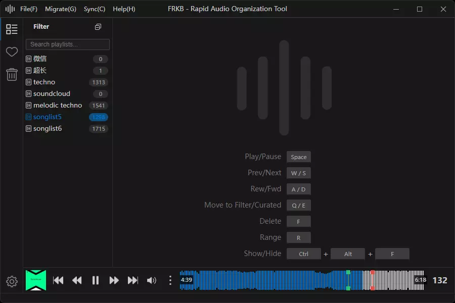
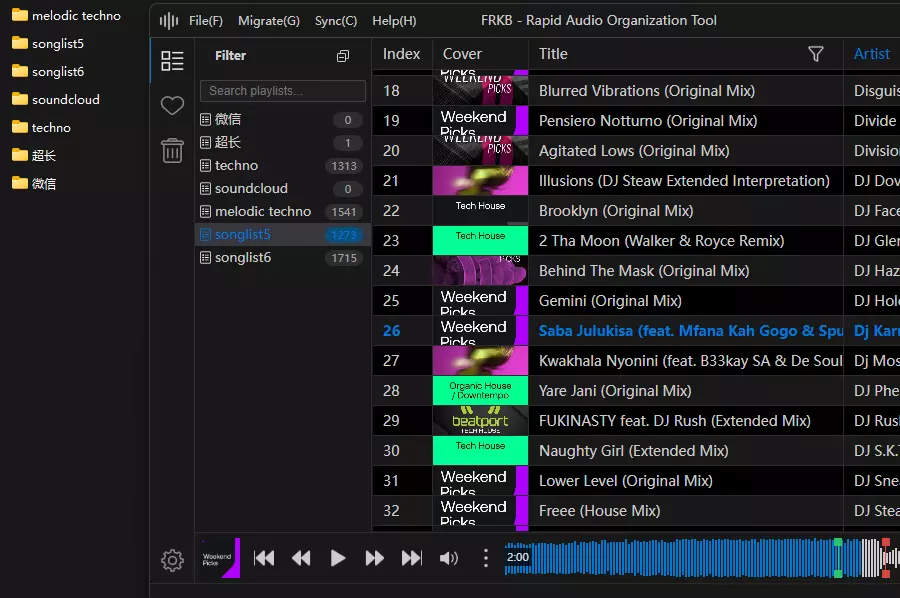
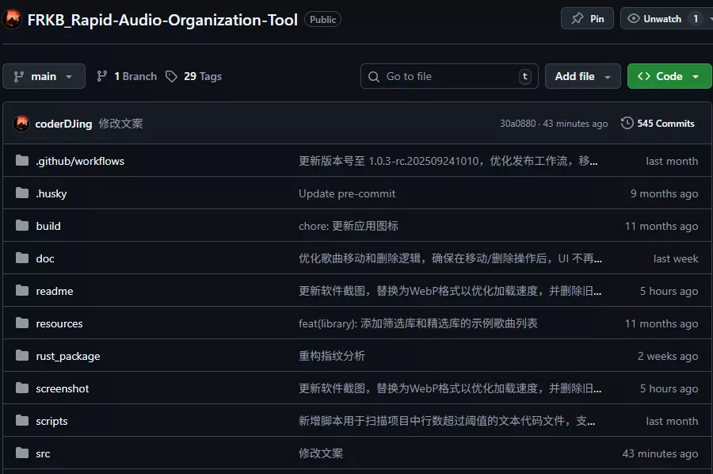

Key Features
Keyboard‑first ergonomics: minimize mouse travel and clicks; frequent actions are one shortcut away
Content‑aware dedup (ignores metadata): detect duplicates by audio features with import‑time prompts

WYSIWYG file mapping: UI groups/folders mirror the real disk hierarchy; rename/move applies instantly
Multiple waveform views: SoundCloud classic, fine-grained waveform, and RGB three-band energy to spot transitions instantly
Wide format playback & conversion: Built-in FFmpeg pipeline covers 20+ DJ and archival formats with batch transcoding
Cross‑platform and open‑source: Windows / macOS; inspect and contribute
FAQ
How to choose the installer?
Pick Windows or macOS according to your system.
What formats are supported?
mp3, flac, wav, aff, aiff.
How do I upgrade?
The app supports online auto‑updates; no manual download needed.
License & contributions?
See License and contributing guide on GitHub.
Open Source
Open source; feedback and contributions are welcome.